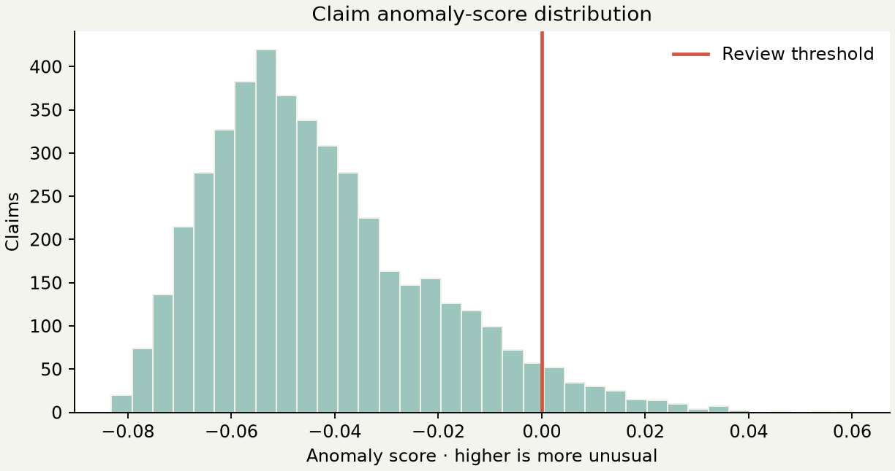

03 / REVIEW QUEUE
Signals for
a human.
Isolation Forest flags the most unusual claims under the configured 4.5% review budget. No flag establishes fraud.
CLAIMS IN DATASET4,500
CLAIMS FLAGGED—
FLAGGED SHARE—
MODELISOLATION
FOREST
FOREST
SCORE DISTRIBUTIONHIGHER SCORE = MORE UNUSUAL

Threshold is set by the configured contamination fraction. Compare claims with receipts, policy, and business context before deciding any follow-up.
NO LABELS, NO CLASSIFICATION METRICS
A review queue is not a fraud verdict.
No verified fraud outcomes are available, so accuracy, precision, recall, and F1 cannot be calculated. The anomaly score only measures relative unusualness in this synthetic dataset.